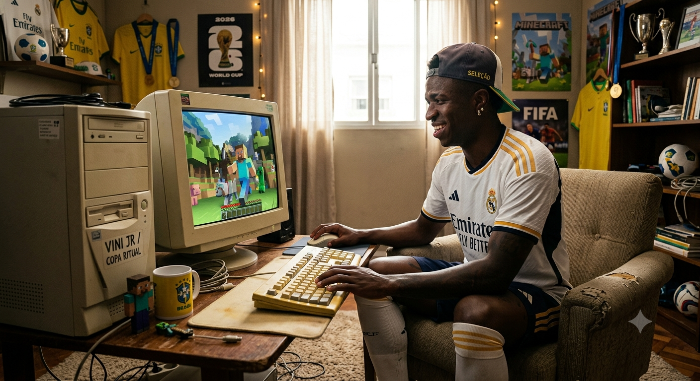
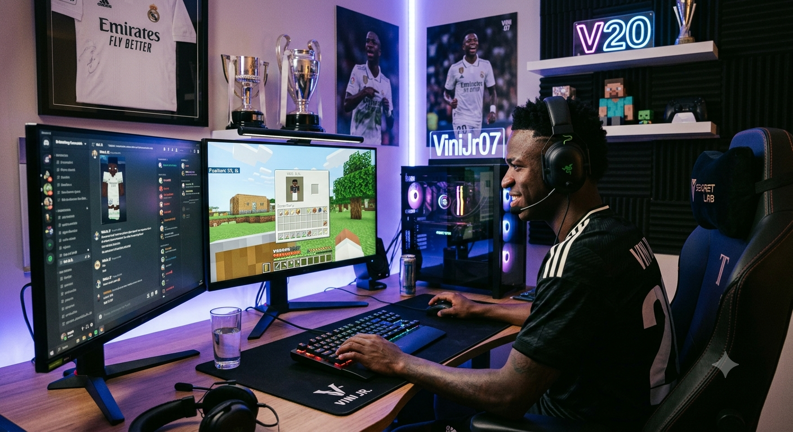

Vini Jr descobre o mundo de Minecraft e divide as telas quadradas com sua "Namorada" Virginia
Nos dias de folga dos gramados, o jogador de futebol relaxa construindo blocos digitais com sua namorada.

O astro do futebol mundial, Vinicius Jr., revelou recentemente um hobby que tem tomado conta de suas horas de descanso fora dos campos da Europa. Tudo começou quando o atleta buscava uma forma leve de se desligar da intensa rotina de treinos e da pressão dos grandes campeonatos. Curioso pelo sucesso estrondoso de jogos de sobrevivência, ele decidiu baixar o clássico Minecraft e acabou se encantando pelas infinitas possibilidades de criação que os blocos oferecem.

Diante do avanço técnico do casal no ambiente virtual, fontes indicam que os planos de Vinicius Jr. e Virginia expandiram-se para além dos mapas privados e solitários. Atualmente, ambos demonstram forte interesse em ingressar em servidores comunitários de grande porte, visando interagir com outros entusiastas e testar suas habilidades em torneios organizados de construção rápida (comumente denominados Build Battles). A rotina deles no universo dos blocos assemelha-se a uma verdadeira gestão compartilhada, onde o atleta foca na coleta sistemática de minérios raros e na segurança do perímetro, enquanto a influenciadora lidera o planejamento estético e o design das edificações. Entusiasmados com a fluidez dessa dinâmica, o casal já planeja ramificar suas experiências de entretenimento para outros títulos de sobrevivência e gerenciamento de recursos em mundo aberto nos próximos meses, consolidando uma parceria que transcende o cotidiano analógico e se fortalece no cenário digital.
A experiência interativa adquiriu contornos ainda mais significativos com a subsequente integração de sua namorada, a influenciadora Virginia, às sessões casuais de jogabilidade. O casal converteu a plataforma digital em um espaço de convivência e cooperação mútua durante os momentos de folga compartilhada. Através da divisão estratégica de recursos escassos, da exploração conjunta de cenários subterrâneos hostis e da edificação de complexas estruturas arquitetônicas virtuais, ambos fortalecem seus laços de forma descontraída. Relatos de interlocutores próximos ao ambiente familiar indicam que a parceira atuou como a principal catalisadora para a perenidade do atleta no ecossistema de blocos, consolidando a atividade como um refúgio de entretenimento saudável e repleto de dinâmicas humorísticas a dois.